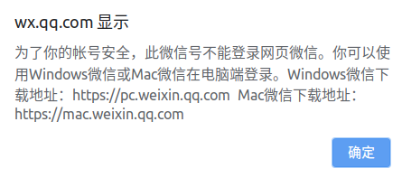
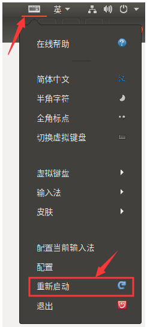

一提到在linux系统上使用微信，大家可能第一反应就是用微信网页版。我刚开始也是这么想的，但现实是残酷的。当我尝试使用微信网页版登录时，发现已无法正常登录。在网上搜了下，得知微信网页版后续将会关闭。
下面是我从网上搜到的关于微信网页版受限的资料，仅供参考。
一、第一次开始限制
在2017年9月份开始，腾讯已经 开始限制新注册的微信号禁止登录网页版微信，老的微信号则不受影响，可以自行验证。用新注册的微信号登录微信网页版，会提示：

二、第二次完全屏蔽与限制
而从2019年7月份开始，腾讯疑似彻底关闭了网页版微信登录入口，通过https://wx.qq.com 或 https://wx2.qq.com 登录网页版的微信都会有如下类似提示信息，不管是新注册的微信号，还是老的微信号都是如此。
>
既然微信网页版这条路不通，那我们就再尝试其它的路子吧。
于是紧接着想到了用electronic-wechat，electronic-wechat是托管在 github 中的一款第三方开源微信客户端，但它也是基于微信网页版API封装的一个客户端。既然现在微信网页版已经不能用了，那么electronic-wechat也就不能再正常使用了。
至此，上述两条路都不通，那么还有没有其它的路呢？
这时候想到了Wine。 那什么是Wine？
关于Wine
Wine是一个在x86、x86-64的类UNIX系统下运行微软Windows程序的”兼容层”。Wine可以运行在Linux、Mac、FreeBSD和Solaris上，在Wine中运行的Windows程序，就如同运行原生Linux程序一样，不会有模拟器那样的性能问题。Wine是”Wine Is Not an Emulator”的递归缩写，所以它并不是模拟器，而是用兼容模式调用DLLs以运行Windows程序。
接下来我们就开始安装和使用它吧。
安装Wine
1、创建一个Wine目录，如：放在/opt目录下，并给予777权限。
cd /opt |
2、进入Wine目录，clone项目deepin-wine到本地。
$ git clone https://gitee.com/wszqkzqk/deepin-wine-for-ubuntu.git |
3、安装Wine
cd deepin-wine-for-ubuntu |
至此，我们完成了Wine的安装，接下来安装微信。
安装微信
下载deepin发布的微信软件包
这里有两种下载方式：
1、从gitee上下载，可能需要登录gitee后才能下载：https://gitee.com/wszqkzqk/deepin-wine-containers-for-ubuntu/raw/master/deepin.com.wechat_2.6.8.65deepin0_i386.deb
2、从网盘上下载，我已经把微信安装包上传到了我的网盘中：
链接：https://pan.baidu.com/s/15FtAPH4P8JQagLTDMcEGdw |
用dpkg安装微信软件包
将上面下载到的wechat安装包（deepin.com.wechat_2.6.8.65deepin0_i386.deb）copy到刚才创建的Wine目录下，然后执行如下命令：
sudo dpkg -i deepin.com.wechat_2.6.8.65deepin0_i386.deb |
至此，微信安装完成。 此时可以在系统应用列表中看到微信图标，单击运行即可。
常见问题
系统是非中文语言环境，会出现微信登录后显示乱码
解决方法：在/opt/deepinwine/tools/run.sh中添加LC_ALL=”zh_CN.UTF-8”，重启微信。由于我的ubuntu系统语言是中文的，所以在安装时没有遇到这种问题。
微信中无法输入中文
当时我安装完微信后，满怀欣喜登录微信，结果发现不能输入中文，但我明明已经装了搜狗输入法。于是从网上搜索一番，找到了解决方案：
搜狗输入法属于Fcitx框架，我们只需重启Fcitx服务就可以了，如下图所示：

如果重启Fcitx服务后，发现仍然无法输入中文，就重启下系统，然后再登录微信，会发现可以正常输入中文了。
参考链接：